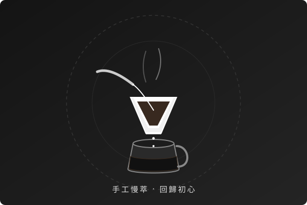
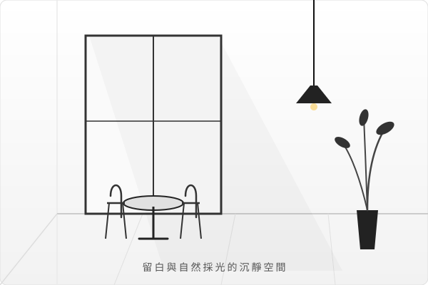

烘焙與豆源研發
負責產地生豆挑選、杯測把關與小批次烘焙曲線調整，維持每一批咖啡豆的純淨風味與穩定表現。

小歪飲料的成立，源自於一個很純粹的心願——在日復一日緊湊忙碌的生活裡，替自己與身邊的人找回一杯真正純淨好喝、能安定情緒的飲品。
我們發現，現代生活的腳步總是太匆促，人們穿梭在街道與螢幕之間，鮮少有機會慢下來好好呼吸。因此，我們在城市角落創立了小歪飲料。不追逐浮誇花哨的流行配方，而是專注於咖啡豆與原物料本質的甘醇，透過專注的手工現萃與恰到好處的烘焙，讓每位走進來的朋友，都能在熟悉的香氣裡找到重新出發的平靜力量。
我們堅信，真正的美味來自於對細節的專注與不妥協的熱情。
不妥協於成本與人工添加物，嚴格選用當季產地莊園原豆與天然原物料，確保每一杯入口的飲品都純淨甘醇。
專注於研磨粗細、水溫與萃取時間的微小差異，每一次沖煮都融入細膩的心意，將產區風味忠實完整展現。
重視生態環境，採用環境友善包材並支持永續農業耕作的產區小農，珍惜大自然所賦予的每一份珍貴饋贈。
小歪飲料的空間設計以黑白色調與自然採光為核心語彙。我們摒棄多餘繁複的裝飾，留下寬暢自在的動線與留白空間。
溫潤的天光透過大面積落地窗灑入室內，伴隨空氣中輕柔悠遠的咖啡香，營造出自然純樸的安定感。無論是帶著筆電專注於個人思維、翻閱一本書籍沉浸午後，或是與好友輕聲交談，這裡都為您保留最舒服的相處距離。

由一群熱愛咖啡與純粹生活的夥伴組成，從烘焙到空間體驗，用心對待每一個細節。
負責產地生豆挑選、杯測把關與小批次烘焙曲線調整，維持每一批咖啡豆的純淨風味與穩定表現。
專注於研磨粗細、水溫與手沖節奏的掌握，將每一杯咖啡與飲品的甘醇層次細膩呈現給來訪的您。
維護門市自然留白的場域氛圍與溫和從容的接待節奏，讓每位走進小歪飲料的朋友都能自在慢下來。